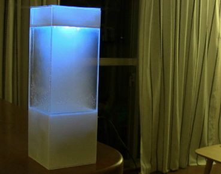
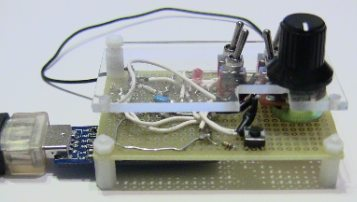

Tempescope is an ambient physical display that visualizes the weather, right inside your room.
See the video below for a brief introduction:
Things you need
You need three things to have a working Tempescope:
Tempescope
The box itself.
The Tempescope is basically a box with a water pump, ultrasonic diffuser, and LED lights controlled by an Arduino.
All of the schematics, CAD diagrams, and instructions on making one are (scheduled to be) in the "hardware" folder of our repository
The source code for the Tempescope is here (an Arduino sketch)
May take between a few weekends ~ several months to build.
Rough cost: $60~

Tempescope Remote
A wireless controller for your Tempescope
This controller lets your PC talk to your Tempescope, or you directly to the box.
The source code for the Tempescope Remote is here (an Arduino sketch)
Takes about a day to build (if you're lucky)
Rough cost: $10~

(optionally) your PC
To control your Tempescope through the Tempescope Remote, and send updates of the current weather forecast etc.
Some sample programs for controlling the Tempescope through a Java program is released here
More info
See the wiki for detailed construction instructions
Or, e-mail ken with your inquiry
Who are we
Ken Kawamoto ken@kawamoto.co.uk Follow @kenkawakenkenke
Licenses
Much of the source code is released under LGPL
The hardware (CAD diagrams, schematics, etc) are released under Creative Commons Attribution-ShareAlike 3.0 Unported
See LICENSE.txt for more details
How can you help
Attributions
Tempescope depends on the following libraries/APIs (amongst others):